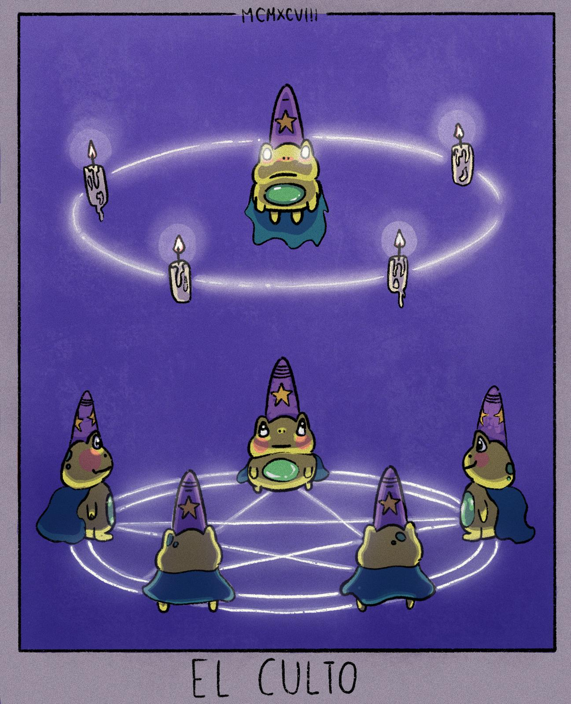
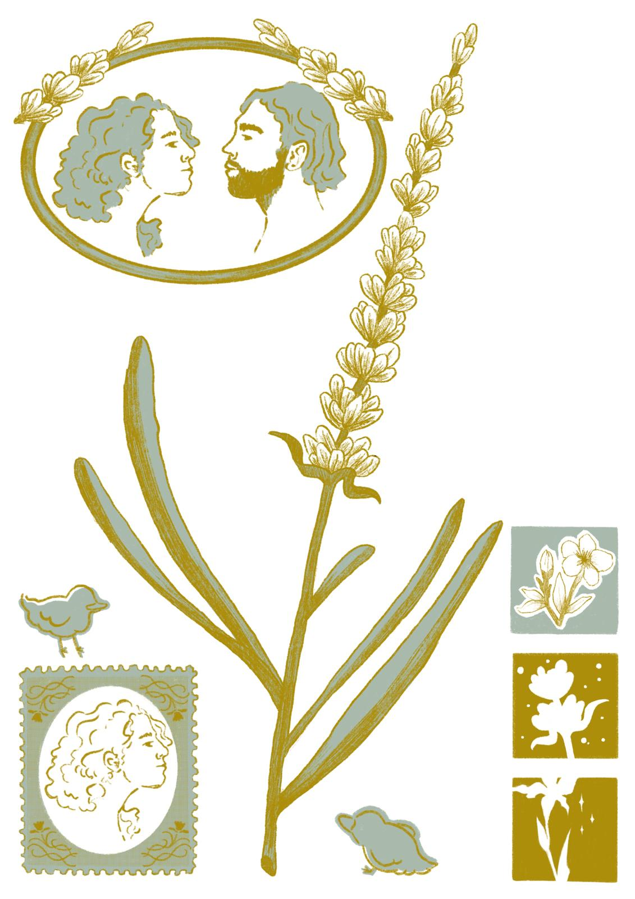
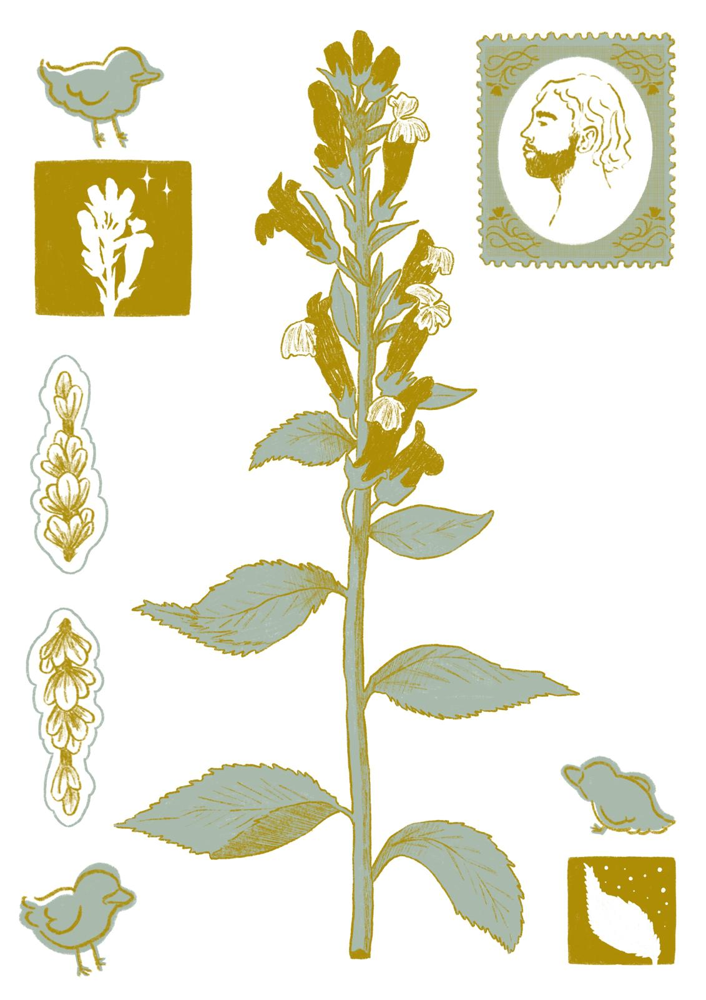
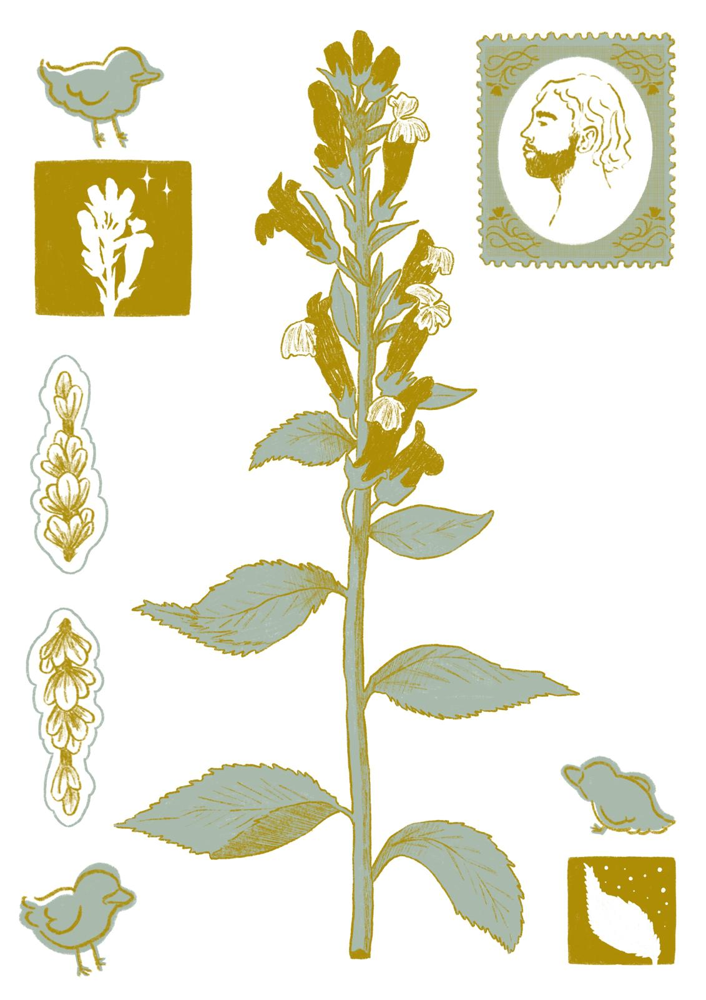
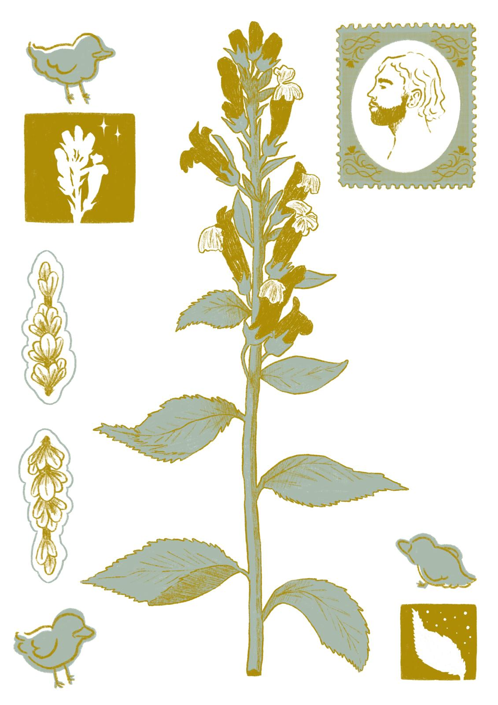

Sobre mí
¡Hola! Mi nombre es Noah, tengo 23 años y actualmente soy estudiante de DAW bilingüe, también he estudiado un grado superior de grabado y estampación. En este portfolio podrás conocer mis intereses, hobbies y gustos musicales.
Intereses
- Leer libros de misterio, rom-com, arte, la autora que me interesa ahora es Freida McFadden.
- Las series y pelis de animación, misterio, comedia:
- The office
- Love, death and robots
- Devs
- Arcane
- Little Miss Sunshine
- Dune
- Dibujar tanto digital como tradicional.
Hobbies
En mi tiempo libre me gusta:
- MTG, he empezado a jugarlo hacer poco pero también me llama coleccionar las cartas.
- Jugar volleyball, estuve en un equipo hasta los 18, ahora lo juego más de pachangueo.
- Varias cosas como: visitar museos, un poco de warhammer, ir a expos de artistas.
Mis gustos musicales
Me gusta de todo un poco aunque mis grupos y cantantes preferidos son:
| Bon Iver |
| Aiko el grupo |
| Amaia |
| Arca |
| Sufjan Stevens |
| Rosalia |
| Amaral |
| Natalia Lafourcade |
| Lorde |
Prácticas
En esta sección puedes ver el seguimiento de mis prácticas y apuntes.
Mis creaciones


 



